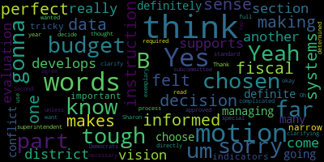
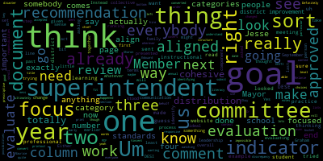
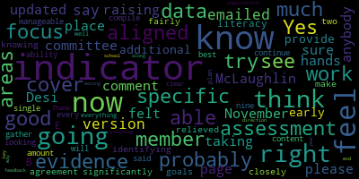
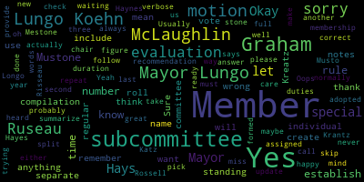

[SPEAKER_06]: meeting was called on January 30th. Today's February 1st. There'll be committee of the whole meeting from 6.30 to 7.30 p.m. via Zoom. The purpose of the meeting is to identify the key indicators on the mass desi superintendent evaluation rubric that will be the basis for the superintendent's evaluation at the end of the school year. The school committee and superintendent will also discuss guidelines for the types of artifacts the superintendent will present to the committee at the formative assessment and summative summative evaluation meetings and how those artifacts will be presented to the committee. Also appoint a designated school community member to calculate the ratings and the key indicators of the DESE approved evaluation tool and compile all the school committee feedback and notes to complete the final evaluation for submission to Mass DESE. Meeting will be viewed through Medford Community Media on Comcast channel 15 and Verizon 45 at 6.30 p.m. You could also call in by dialing 13126266799, enter meeting ID 99207780433 when prompted. Additionally, question or comments can be submitted during the meeting by emailing medfordsc at medford.k12.ma.us. Those submitting must include the following information, your first and last name, your Medford Street address, your question or comment.
[lRR2dgf0NZM_SPEAKER_04]: Roll call please, member Ruseau. One second. Member Graham.
[Kreatz]: Here.
[Announcer]: Member Hays.
[Kreatz]: Here.
[Announcer]: Member Katz.
[Kreatz]: Here.
[Announcer]: Member McLaughlin.
[Kreatz]: Here.
[Announcer]: Member Mustone.
[SPEAKER_06]: Here.
[Announcer]: Member Ruseau. Present. Mayor Locker.
[SPEAKER_06]: Present. Seven present, zero absent. So we can go right into it. I know We wanted to talk about indicators, how to compile the ratings and guidelines. So I'll open it up to the floor.
[lRR2dgf0NZM_SPEAKER_04]: Mayor?
[SPEAKER_06]: Yes, Member McLaughlin.
[NndFNuozZb4_SPEAKER_06]: I was going to suggest if we could just open the document. Thank you, Sharon, for pointing out the appendix C in the 44. page document to start with. So I don't know if someone wants to share the screen or what other folks think.
[lRR2dgf0NZM_SPEAKER_04]: That sounds great. Do you want me to share the screen? Oh, yeah, I think I have it.
[NndFNuozZb4_SPEAKER_06]: If someone else wants to take the liberty, if they have it up right now, they can, because I have about a million tabs open on my page. Hold on, I think I have it. So I'm sharing the screen. Yeah, here it is. Can you guys see my screen?
[SPEAKER_06]: Yes.
[NndFNuozZb4_SPEAKER_06]: Okay.
[SPEAKER_06]: You could make it larger if you wanted to.
[lRR2dgf0NZM_SPEAKER_04]: Okay.
[NndFNuozZb4_SPEAKER_06]: Let me just try to make it bigger. I'm going to actually just fix it in a second. Is that bigger for you guys? OK. Just move the grid over. OK, so this is the Appendix C. Which is. In the appendices of the whole document, so page 30. If other folks have the document and they want to look on their own, I guess.
[Graham]: So I just want to make sure I understand what we're doing. We are identifying the one or two focus indicators for
[lRR2dgf0NZM_SPEAKER_04]: section as a first step through like our agenda.
[Graham]: Is that what we should be thinking about thinking through right now?
[SPEAKER_06]: I think that's the first part of this. We also need to decide if we're going to use numbers or the Dorothy's suggested unsatisfactory needs improvement for fish and exemplatory and then figure out if we want a committee or one person to do the ratings and take the notes. So I agree, let's start with the indicators.
[SPEAKER_00]: If I can jump in. So the training that we had with Dorothy Presser about the superintendent evaluation, there were a few things that came up that we just needed to, I guess, update our process in terms of to match the, I think this is, does it say 2019? I don't know if it's a change or not since I wasn't doing it before this, but there's some guidelines in terms of the indicators under each standard. So there's what, five standards? And based on that training, what we were told is that, maybe there's just four standards, that overall there should be six to eight, we should choose six to eight indicators to focus the evaluation on, that there has to be one from each standard. So we have to choose at least one focus indicator from each standard. But beyond that, you know, And it should match, we should choose the ones that seem to most closely align with the superintendent's goals.
[Edouard-Vincent]: Yes, I just was going to say the version that I emailed to the committee is November 2022. So that there was a 2019 and then Desi updated it. And so I'm not sure if that's the same page member member McLaughlin is on right now.
[NndFNuozZb4_SPEAKER_06]: But the let me look at my email and get that one.
[Graham]: I tried to print the document that you sent superintendent and it's a mess of a document. Like it doesn't I don't know what happened when they convert, when Jesse converted it to a PDF, but like the words roll off the page. Like I, it's, it's sort of a disaster. So I actually was like wanting to read through that, but I, it just is like sort of impossible to use the way that it was. Definitely. I don't think there's anything you can do about it. That's on the Jesse website, but.
[SPEAKER_00]: That's why, yeah, so I obviously, the one I have was out of date. I looked it up, I Googled it just because I found the same thing that Jenny said. I couldn't, there were missing pieces, like it just, you couldn't actually really read all of it. So I was trying to find a cleaner copy, but I guess I got a wrong, a not completely updated one.
[NndFNuozZb4_SPEAKER_06]: I'm looking at the document you guys are talking about and I do see, Mayor, may I, sorry. Absolutely. I do see what member Graham is mentioning on the first couple of pages, but in the, in the rubric for the superintendent evaluate, I think for the section, the appendices, maybe Jenny, am I wrong? That the rubric looks okay. It does look like in the, in the text field, the staff didn't look okay, but let me just scroll down and say, I mean, I'm just looking at yet another document because
[Graham]: uh you know we like to have lots of documents and these things and like this is one I'm on the DESE website and it's just a document about the standards and the standards are exactly the same yeah as the ones in Sharon's document so even though there is a discrepancy in the date like the the standards themselves are exactly the same They're the same number, they're the same title. It doesn't look like anything has changed. So I think wherever you look, the choices in each bucket are the same. So that's, I guess, good.
[SPEAKER_06]: So does somebody have the document accessible where we can zoom in and kind of go category by category, get Dr. Edouard-Vincent's input and committee's input so that we can pick these indicators?
[NndFNuozZb4_SPEAKER_06]: Yeah, I do, Mayor. That's what we have to open it first.
[SPEAKER_06]: OK, so it's a little hard to see.
[NndFNuozZb4_SPEAKER_06]: Yeah, I'm going to zoom in in a second. I just got to get my head ticked because I closed it and opened it to look at the other document. So give me a minute. So this is Appendix C. And then let me zoom in. Whoops, that's really large. Can you guys see that?
[SPEAKER_06]: Yeah, that's great. That's great.
[NndFNuozZb4_SPEAKER_06]: OK, good. Because it's really large for me. And may I, Mayor? I had another question. And in reading this, I also thought, and maybe this is, if others understand differently, please share. I also thought that the superintendent was gonna pick one set of goals under each of the goal piece or not. I mean, are we starting with step two to look at the four standards and then go back to step one? Well, we already did step one when we approved her goals, like at the beginning of the year, but they're not going to be related to the, the, um, the standards if, unless we have them up as well, or the, you know, we want to identify those so that, so in other words, what Dorothy was saying is that the goals that we approved by the superintendent as, um, you know, earlier in the year. The standards that we're evaluating her on need to be obviously related to those. And I think, you know, I don't know if people want to bring those up or for, especially for people that are going to view this, that they know what those are so that we're referring to them, or I don't know, how do you guys want to do that?
[Graham]: I have a printout of what those were that Maurice sent us. So we have a, like three pages, right? The district improvement goal. an early literacy goal for student learning and then professional practice goal. Right. So I like before the meeting, I went through and looked at what those were and then looked at the indicator possibilities. And I made some notes about what I think sort of aligns the two. They need to be aligned. Right. So I Like for example, like in instructional leadership, the two that stood out to me as like the most aligned. So Melanie, if you scroll down a little bit to that next section.
[lRR2dgf0NZM_SPEAKER_04]: Yep. This section? No, a little bit further down. Page four. Yeah, page four. Okay. Page five, sorry.
[Graham]: I think just at the bottom of this page, I think, right there. So in that left column there under instructional leadership, the two that stood out to me as like the most aligned to the overall goals were accepted.
[SPEAKER_00]: If you go down one more page, if you go down one more page, it actually gives the description of each of those rather than just the titles. So it gives, yeah.
[NndFNuozZb4_SPEAKER_06]: So Mayor.
[SPEAKER_00]: Sorry, Jenny, I interrupted you.
[NndFNuozZb4_SPEAKER_06]: Thank you. I just, this is super helpful. Thank you to member Graham for sort of going through and, you know, doing this in advance, I just want to make sure that, again for folks who are watching or want to later on that they're understanding the process too so I don't know if somebody wants to do just sort of a brief. description or introduction or what? I don't know if the vice chair wants to do that or if somebody does, but it might just be useful for folks that are watching so that they understand what we're doing and what this process is and what the attachment for the standards to the goals are and why. Does that make sense? Yeah, I'm happy to do it.
[Graham]: Member Graham? Okay, so I think for everyone who's watching, for context, right? The school committee is responsive. One of our chief responsibilities is to hire and evaluate the superintendent. So that evaluation process is quite prescriptive. Um, that comes from Jesse. So we can, you know, I think on some level we could do anything we wanted, but ultimately it has to fit into a particular structure in order for us to be able to submit our our annual evaluation to DESTI on behalf of the superintendent. And so as we've done all the years that I've been on, the superintendent presented earlier this year, a set of goals that covers three categories. One is a district improvement goal, one is a student learning goal, and one is a professional practice goal. And so earlier this year, like maybe end of September, Dr. Edouard-Vincent presented to us Um, a document that lists those goals and like what the key actions are related to the goals and what the outcomes would, might look like. Um, if she has achieved those goals and we approved that unanimously. Either at the end of September or at the beginning of October. Um, we subsequently had, uh, a retreat with somebody from the Massachusetts association of school committees to connect that. to this like very long set of indicators that DESI asks us to weigh in on. So they are in addition to the goals that we have already approved. And the change for us in terms of how we are doing this to align with the newest latest version of what DESI is asking us to do is to Instead of evaluating the superintendent on each and every one of these rubrics, we are being asked to evaluate, to identify a subset of all of these indicators across four categories that are the ones we want to see focus on this year. And the ideal is that they align with what the goals are that we've already approved. This meeting is really to say we did not do that piece of work when we approved the goals initially, because we hadn't yet like connected those two things the way that Dessie is connecting them right now. Um, and so we need to go through and up this, um, the top of the screen there, you can see those four columns. It's our collective job to reach consensus on which of the one or two indicators in each column. do we believe are the ones that we will focus on and evaluate the superintendent on? All of those things obviously are things the superintendent's generally expected to do in any given year, but from an evaluation perspective, the goal is to make sure that we are evaluating the superintendent in a way that is focused on what the district's goals are, and that's sort of reflected in the superintendent's goals. So the first thing that we need to do Um, is go through these indicators and determine in each column, there has to be at least one, but the recommendation is that there are no more than two, um, which ones we are going to evaluate based on when we do a review. Later this year. So I think fast forward to next year, we would do all of this at the time that we, um, go ahead and identify what the goals are for the year. So this step, this interim step that we're taking next year will be done sort of all at once. We just hadn't, as a committee, as a collective, gone through this together to sort of link up the changes that DESE has made in the past year or two with what our process has been over these last few years. So the first thing on our agenda is to decide which of these things most closely aligned with what the goals are that we've already approved. So we're not opening up the floor to rehash goals, but instead to say which of these things match those goals that we've already asked the superintendent to work on, and it is halfway through the year, so she's already working on those things.
[SPEAKER_06]: Great, that's perfect. Thank you, Jenny. So first up, we have instructional leadership. A is curriculum, B is instruction, C is assessment, D is evaluation, E, data-driven decision-making, and F, student learning. So if anybody has any thought on which of these indicators you'd like to choose for this coming evaluation, speak now, please.
[NndFNuozZb4_SPEAKER_06]: I don't think I'm able to raise my hand because I'm screen sharing, so I just wanted to say that. I'm happy to wait. Thank you. I was thinking instruction and or data informed decision making based on, you know, the instructional leadership skills that Dr. Edouard-Vincent has. you know, talked about in terms of the goals as well for the instructional leadership, but that's sort of where I'm weighing in. I also just wanted to say, again, through the chair, I thought that was an excellent explanation for lay people and appreciated. And also that it's really important that this is done and that this is done, you know, in the future at the beginning of the year, so that the superintendent knows exactly, you know, what the evaluation is going to be at the end of the year and what it's going to be on. So it's very clear for everybody as any employee essentially would want to know what they're being evaluated on very clearly. So I think, you know, this is great and this is a huge help and tool, but I would say instruction, and I know they say one or two at most from each and not in a maximum of not more than six, but those are the two I'm leaning towards and would love to hear what my colleagues think.
[SPEAKER_06]: Okay, so B and E.
[SPEAKER_00]: If I can, I, I have the same. Also, just to be clear, it's six to eight. So we can, it could be, we have to have one from each, and then we could have two in some, we could have three in some, depending on what seems to be most aligned to Dr. Edouard-Vincent's goals and to kind of what we think is most important focus I think for the year two together with the superintendent. I had actually the exact same thing, instruction and data informed decision making based on looking at the early literacy student learning goal that did focus both on looking at our literacy instruction but also using the MAP scores really to focus on that data-informed instruction.
[SPEAKER_06]: Sounds good.
[SPEAKER_00]: I had the same.
[SPEAKER_06]: Thank you.
[Kreatz]: I had just chosen one, but I had chosen data-informed decision-making, but the instruction makes perfect sense.
[SPEAKER_06]: So is there a motion on the floor for instructional leadership that we take categories instruction and data-informed decision-making?
[NndFNuozZb4_SPEAKER_06]: Sure, I'll make that motion.
[SPEAKER_06]: Motion by Member McLaughlin, seconded by... Second. Member Hays, all those in favor?
[lRR2dgf0NZM_SPEAKER_04]: We'll call them. Just writing things down. One second.
[SPEAKER_00]: Did we want to, I'm sorry. Did, did we want to talk to the, did the superintendent want to weigh in on it too, or is this something I don't really, I'm not really sure. Is this something that we just.
[SPEAKER_06]: choose or... Yes, we'll take any input from Dr. Edward-Vincent anytime she wants to chime in. Just wanted to make sure she had a chance. I'm just seeing three people each on the side.
[Edouard-Vincent]: So if I don't see you raising your hands, anybody, please just... I just was going to comment that I felt both of those indicators are aligned with the work that's taking place, the work that we're doing. So I do I do feel that that's there, and we'll probably be able to provide additional data, some assessment data for our early literacy assessments, but we're doing that. So indicators B and E, I'm in agreement with those two indicators.
[NndFNuozZb4_SPEAKER_06]: And there, I just wanted to show the B and E more sort of broken out as Member Hays was mentioning.
[SPEAKER_06]: Great, thank you. OK, Member Ruseau, roll call, please.
[lRR2dgf0NZM_SPEAKER_04]: Yes. Member Graham?
[SPEAKER_06]: Yes.
[lRR2dgf0NZM_SPEAKER_04]: Member Hays? Yes. Member Kreatz? Yes. Member McLaughlin? Yes. Member Mustone? Member Mustone? I don't know if she's still on.
[Ruseau]: Let me check. Member Ruseau, yes. Mayor Lungo-Koehn?
[SPEAKER_06]: Yes. Member Mastone? Yes. Oh, thank you. Seven in the affirmative, zero in the negative. Indicators for instructional leadership have been chosen. Next up is management and operations. We have environment, HR management and development, scheduling and management information systems, law ethics policies, fiscal systems. A and B, yep, A and B seemed to stick out at me. Member Graham.
[Graham]: I actually only had A selected here. Like when I read through B, I felt like it was trying to get at something that arguably like we need to get to as a district, but didn't totally line up with the specific details of what we're asking the superintendent to focus on this year. I totally agree on A. And I think that's really important given like the focus, you know, actually the alignment of the goals that we have and some of the immediate focus that we have, particularly at the high school. But B didn't totally line up for me exactly the way A did. So, but I could be swayed either way.
[SPEAKER_06]: Okay, so two votes for A, one vote for B. Would anybody like to add anything further?
[Kreatz]: I had A also. I had A and I also had, because I felt like we do the budget, I had fiscal systems develops a budget that supports the district's vision, but I don't know if that's gonna come in another section or if it's just not really part of the evaluation.
[SPEAKER_06]: Yeah, I like the way E is described too.
[SPEAKER_00]: So two votes for E, one for B, four for A. The only thing I would say is I don't see that reflected in her goals. I don't know how tightly we have to stick to that understanding of having it, the focus indicators match to her goals. But if we do, which it says aligned to the superintendent goals, I don't I don't know, unless someone has a different way of looking at it that does make that match some of the goals. I don't really see anything necessarily about budget unless we're talking about buying. I mean, we do talk about buying a new literacy program.
[SPEAKER_06]: Mayor. Member McLaughlin.
[NndFNuozZb4_SPEAKER_06]: I also am a vote for environment and I was torn between B and E when we were looking at it. I do think it's interesting as we're going through this and good fodder as we're thinking about September, which is unfortunately right around the corner. And, you know, thinking about how the goals can align with some of the things that we're talking about now, particularly around B, in my opinion, but, and certainly obviously, you know, around E too, but I do think if I had to choose between the three, I would say A would be my top choice and B would be my second with a mind towards understanding that if we're getting too heavy in the eight or so that we're requiring, that I would be okay with dropping off B and considering it for September.
[Graham]: Mayor? Yes. I think the other thing, I'm a proponent for just the one in this category, mostly because When we get to the next category, which is really, really aligned with what the superintendent's goals are, I thought they all applied. So if we're trying to stick to six or eight, like going with one here might make some more sense because that would give us a little bit more freedom to be focused on the communications, the family and community engagement component. So that was my other thought is like, I think it's important for us to. Go sort of slim here and be focused on those other things.
[SPEAKER_06]: Okay So it sounds like there's a motion on the floor for emotional people for eight. Okay There's a motion on the floor for a and if we need an eighth, then be. How does that
[NndFNuozZb4_SPEAKER_06]: And I think we can wait for B, frankly. So I would make a motion to take A for management and operations. And then obviously, if we get to the end and we feel that we can go back, we can make another motion. But I would just make a motion for environment under management and operations. Second.
[SPEAKER_06]: Motion to include A, seconded by member McLaughlin, seconded by member Hays. Roll call, please.
[lRR2dgf0NZM_SPEAKER_04]: Member Graham. Yes. Member Hays. Yes. Member Katz. Yes. Member McLaughlin. Yes.
[Ruseau]: Member Mustone.
[SPEAKER_06]: Yes.
[Ruseau]: Member Ruseau, yes. Mayor Lungo-Koehn.
[SPEAKER_06]: Yes, seven in the affirmative, zero in the negative, A is included. Now we're on to family and community engagement. We have engagement, sharing responsibility, communication, and family concerns. I'll open up to the floor or to Dr. Edward-Woodson. Can I run down? Yes, member cracks.
[SPEAKER_00]: I mean, member Hays. Sure. Um, I just based on what member Graham said just a few minutes ago, I felt the same way about this, I think are both long term, we've been talking about family and community engagement and communication. And now with things that have happened in the past couple of months, I think that's come into a sharper focus of an area of of growth. So I agree with her. I felt, I mean, when I felt like I had to narrow it down and went with B and C, but I could certainly see all four of those even being a focus.
[NndFNuozZb4_SPEAKER_06]: Mayor.
[SPEAKER_06]: Member McLaughlin.
[NndFNuozZb4_SPEAKER_06]: I think that this is something that, you know, we have been working on and talking about for a long time. I think that these need to be a primary focus. I know that we have, what is it, two from the first, one from the second, so three. if we took four, would be at seven at this point. I do feel like D can be a little bit redundant if you read A, B, and C, because I do think that B addresses family concerns. I think that the only difference that I see in D might be equitable. I don't know if I see equity in the other I don't see the word equitable in the other.
[SPEAKER_06]: Equity is in all of the superintendent's goals. It's like the primary focus.
[NndFNuozZb4_SPEAKER_06]: So I think we can go with A, B, and C. All right, then I make a motion for A, B, and C under standard three, family and community engagement.
[SPEAKER_06]: Motion by member Glaflin, seconded by.
[NndFNuozZb4_SPEAKER_06]: Second.
[SPEAKER_06]: Member Hays, roll call, please.
[lRR2dgf0NZM_SPEAKER_04]: Member Graham? Yes. Member Hays? Yes. Member Kreatz? Yes.
[Ruseau]: Member McLaughlin?
[lRR2dgf0NZM_SPEAKER_04]: Yes.
[Ruseau]: Member Ruseau, yes. Mayor Lungo-Koehn?
[SPEAKER_06]: Yes. Seven in the affirmative, zero in the negative. Motion passes. And Member Mustone? Yes. Seven, zero. Professional culture, commitment to high standards, cultural proficiency, communications, continuous learning, shared vision, management conflict. And then thank you for scrolling down. Member McLaughlin.
[Graham]: Mayor? Yes, Member Grim. If I had to prioritize like one of these, it would be, especially since we dropped family concerns out of the last category, I think for me, it would be managing conflict. because I think that ties nicely with all the other communication goals and the challenges with climate and culture that we have right now and with the superintendent's overall district improvement goals. So for me, that one jumps out as perhaps the most pressing thing that hasn't already been covered elsewhere.
[NndFNuozZb4_SPEAKER_06]: Mayor?
[SPEAKER_06]: Member McLaughlin.
[NndFNuozZb4_SPEAKER_06]: I would agree that F is an important standard, and I would also advocate strongly for B. I think cultural proficiency is really important and something that aligns with our vision of equity and something that needs to be explicit.
[SPEAKER_06]: Thank you. I would also just highlight A, commitment to high standards as well. So I think we have A, B, and F that have been being thrown around. membercrats member.
[Kreatz]: Yeah.
[SPEAKER_06]: So any comments on those?
[Kreatz]: Yes, I definitely think managing conflict, definite on that. And it's tough with the A and the B, like, I think I would choose A over B. It's tough because then we're going to get into too many indicators. But they're both important. It's very, it's very tricky to narrow it down.
[SPEAKER_06]: And I think the recommendation is somewhere around six to eight. So if we have nine, I think it's fine.
[Kreatz]: And what does the superintendent think so far of, um, of what we've, um, so far approved?
[Edouard-Vincent]: I feel, you know, I feel significantly relieved knowing that we're identifying the specific indicators, which are fairly closely aligned to the goals, so that I think this is going to make it more manageable. And I think you said right now we're up to nine I feel like that's probably a good amount and that I will continue to gather and compile evidence in those areas, you know, to the best of my ability. But I think, you know, when you're looking at every single indicator, it's just too much, it's too much content to be able to cover everything and try to cover it well.
[SPEAKER_06]: Absolutely.
[Edouard-Vincent]: Thank you.
[SPEAKER_06]: I agree. It was hard to even, you know, Mark all of these, there was so many. I think we have the most votes for A and F. Is there a motion or any other? I would make a motion for A, B, and F. A motion for A, B, and F. Is there a second?
[Kreatz]: Second.
[lRR2dgf0NZM_SPEAKER_04]: And Democrats, roll call. Member Rossell, you want me to call the roll? I'm sorry, I was just typing it all out.
[Ruseau]: Member Graham?
[lRR2dgf0NZM_SPEAKER_04]: Yes. Okay.
[Ruseau]: Member Hays?
[lRR2dgf0NZM_SPEAKER_04]: Yes.
[Ruseau]: Member Kreatz? Yes. Member McLaughlin? Yes. Member Mestone?
[SPEAKER_06]: Yes.
[Ruseau]: Member Rossell? Yes. Mayor Lungo-Koehn?
[SPEAKER_06]: Yes. I'm in the affirmative, zero in the negative. It looks like we have our indicators. Thank you, everybody. That was great teamwork. We have artifacts, superintendent will present to the committee at the formative assessment. And then we also have, you know, who's gonna, are we gonna create a committee to gather the ratings and the notes? Or are we gonna have one person do it? So with those two topics left.
[NndFNuozZb4_SPEAKER_06]: Mayor, can I stop sharing the screen or do you want me to keep it?
[SPEAKER_06]: I think it's good, thank you.
[NndFNuozZb4_SPEAKER_06]: And then I would like, I would, I would think, you know, not that we need more committees, but I think it would be helpful to have a committee doing this just to help ease the process, but that's my opinion.
[SPEAKER_06]: Okay, so there's one vote for a committee of I'm assuming three people to help calculate the ratings and notes by member McLaughlin. Anybody else have a comment on that? If you think it should be one single person or committee member Hays.
[SPEAKER_00]: I agree with the committee idea, at least, I mean, maybe at least for this first year as we're since we're looking at some changes, possibly to how we do it. Just to take it off of having one person feeling responsible for it really is a pretty big task that idea of kind of combining everyone's ideas into one. I think it really is a big thing. big thing to do and it's one of our most important roles as a school committee so I would I would agree with the idea of doing it in a smaller subcommittee.
[Graham]: Mayor? Member Graham? I think I think the committee could work provided that like at least in terms of like the ranking evaluation that somebody takes on like the compilation of that component of it. And that the focus of the committee is like weeding through everybody's comments and writing like a cohesive comment about like that compiles everybody's comments. Because I think that's one thing we haven't totally done in the past. Like I think we've tried to present everybody's points of view, and I think that's important, but I think what we heard in our session is like, the goal is really to have a cohesive story that comes out of this evaluation that the superintendent can act on. So I guess, like, I, I can see how we, like, I could see a format in my head about the, the like ranking part, right? So whether it's neat or proficient or exemplary, whatever, whatever those categories are to show like a distribution of, um, how the individual committee numbers sort of landed on each of those indicators. And, but then once you see that distribution, like there could be, you know, one person who thinks one, two people who think two and four people who think three, like, I think it would be ideal if then the committee, the subcommittee could look at that and say, the recommendation is three, for example. And the recommendation is like of all of these comments, which are public record anyway, like this is what we recommend the comment to be so that the output of the committee is like a recommendation about how to take the distribution of everybody's scores to like one, one measure. And then a cohesive narrative, um, that becomes the review that then comes to committee of the whole, we all get a chance to like review it. And then we can vote to pass it. So I'm wondering like, if that makes sense, I just think somebody is going to have to sit down and like do the number of mechanics. I'm happy to be that person. Like here's what the distribution is so that then the committee has something to act on. Cause I think if three people get in a room and try to create that together, it's, it's going to be really tedious for everybody, or I'd rather the focus of the work beyond like making the review sound cohesive in the end.
[SPEAKER_06]: Mayor. Member McLaughlin and Member Hays.
[NndFNuozZb4_SPEAKER_06]: I think Member Hays had her hand up first.
[SPEAKER_06]: Member Hays and Member McLaughlin. Thank you.
[SPEAKER_00]: I just wanted to clarify. So one of the things we did find in that retreat training was that the numbers are not necessarily what we're supposed to be using. And I don't know if that's exactly what you meant, Member Graham, when you were saying that. But in terms of finding that proficient or needs improvement. Again, I forget exemplary, but that based on the training, it was using those words that each member should be reading. So just want to, again, clarify for people that we have been doing the numbers, I think for years. I know we just did them that way last year, but that moving forward, we were going to use the category names or instead of using the actual one, two, three, four numbers and averaging them. I just didn't remember what the names were.
[SPEAKER_06]: I have the notes from the session. So is there a motion on the floor to use the wording, unsatisfactory, needs improvement, proficient and exemplary versus numbers?
[Kreatz]: Yes. Motion to use those words, yes.
[SPEAKER_06]: Second. Motion by Member Kreatz, seconded by Member Laughlin. Roll call, please.
[lRR2dgf0NZM_SPEAKER_04]: Member Ruseau.
[Ruseau]: I'm just trying to figure out what the motion is motion to use words for numbers.
[Kreatz]: Yep.
[Ruseau]: We never use numbers but I'm happy to do that.
[Kreatz]: So, the words are exemplary for standard, sorry Democrats, we don't get to decide the words directly in the required just to clarify what they were I thought you wanted to know what they were as part of the motion.
[Ruseau]: I don't know, I know it's the wrong time. I'm sorry, thank you.
[Kreatz]: I just was clarifying what the motion was, sorry. I was gonna read it out in full if you want me to. No. Oh, okay.
[NndFNuozZb4_SPEAKER_06]: Mayor.
[SPEAKER_06]: Yeah, I'm just waiting for a roll call, and then we'll move on to, I think it sounds like we need to have another motion after this to form a committee. So members of the college.
[Ruseau]: Sure, member Graham?
[lRR2dgf0NZM_SPEAKER_04]: Yes.
[Ruseau]: Member Haynes?
[lRR2dgf0NZM_SPEAKER_04]: Yes.
[lRR2dgf0NZM_SPEAKER_04]: Yes.
[SPEAKER_06]: Yes.
[NndFNuozZb4_SPEAKER_06]: Oh, I did, but I wasn't called in that role a moment ago. So I was just saying, yes.
[Ruseau]: Yes, I'm sorry. I didn't mean to skip you. That's okay.
[NndFNuozZb4_SPEAKER_06]: No worries. I did want to say before the motion for the subcommittee, I actually also wanted to could ask my colleagues about the consideration for being able to, I know that the subcommittee will make recommendations to the committee as a whole and then we'll take the vote, but also that there is, while we can do wordsmithing on the narrative piece for individuals to make a cohesive statement around that particular item that we're evaluating on, I would like to have folks consider and leave it up to the committee for discussion right now as to whether, I know that the statements are public anyway, but whether we want to have the statements available if we feel like we need to look at them just to get a further understanding of the wordsmithing of the subcommittee. I don't know that folks want to, but they may want to, so just want to remind people that that might be a factor.
[Graham]: So meaning that after the committee does its work it would hand over not just the recommendation but the raw like original documents from each member as well?
[NndFNuozZb4_SPEAKER_06]: Raw data. I think it's important for the raw data. Yes, thank you. So I would make a motion that the material includes raw data so that the evaluation includes the recommendation and the raw data at which the recommendation was arrived at.
[Ruseau]: Can you repeat that please?
[NndFNuozZb4_SPEAKER_06]: and make a motion that the evaluation include the raw data from all members in addition to the summary evaluation of the subcommittee and recommendations of the subcommittee.
[SPEAKER_06]: Motion by Member McLaughlin, seconded by Member Graham. Roll call vote on evaluation including recommendations and raw data.
[Ruseau]: Member Graham.
[lRR2dgf0NZM_SPEAKER_04]: Yes.
[Ruseau]: Member Hays.
[lRR2dgf0NZM_SPEAKER_04]: Yes.
[Ruseau]: Member Krantz.
[lRR2dgf0NZM_SPEAKER_04]: Yes.
[Ruseau]: Member McLaughlin.
[lRR2dgf0NZM_SPEAKER_04]: Yes.
[Ruseau]: Member Musto.
[lRR2dgf0NZM_SPEAKER_04]: Yes.
[Ruseau]: Member Ruseau, yes. Mayor Longo, correct.
[SPEAKER_06]: Yes, 70 affirmative, zero in the negative. I believe there's a motion on the floor to form a three member subcommittee.
[Ruseau]: Mayor?
[SPEAKER_06]: Yes, Member Ruseau.
[Ruseau]: If I could make that motion so that I could follow rule 31 in our rules that we adopted last year. Rule 31 says the special subcommittees I'll summarize it. It's always too verbose, but that we can establish special subcommittees by our vote. We have to include what those, that vote has to include what the membership is, the duties, as well as the duration that we think that this subcommittee will be formed for. So we can't create a special subcommittee that is just until you get it done, like we have for regular committees. So we would just, just from what I've heard.
[SPEAKER_06]: I mean, do we think- So is anybody interested in being on this subcommittee? Member McLaughlin, Member Hays. I'm happy to do it. McLaughlin, Hayes, and Graham. If there's no objections and no further ayes, we have a committee member. So there'll be a three person committee, I think, In my opinion, a committee should just be established until the school committee, whoever they may be at the time, decides to do it in a different format. Mayor? Member Ruseau?
[Ruseau]: So you don't want to establish a special subcommittee then, you just want to establish another regular standing subcommittee.
[lRR2dgf0NZM_SPEAKER_04]: Those are the two choices we have. It's up to the committee.
[Ruseau]: I don't care either way, actually. I don't think there's anything wrong with it.
[SPEAKER_06]: Yeah. And then you can always make it permanent if it works out.
[Kreatz]: Yeah. I agree. I just think that it's a complicated process. And having this special, or the subcommittee, I think would be necessary each year, unless it's determined it's not.
[SPEAKER_06]: I would second. You're seconding, member McLaughlin, you're seconding the creation of a subcommittee.
[NndFNuozZb4_SPEAKER_06]: Yes, if that's what Member Ruseau is making the motion for, I should have clarified.
[SPEAKER_06]: Yes, Member Ruseau, seconded by Member McLaughlin to form a new subcommittee made up of three members to compile the ratings and notes for the superintendent's evaluation. Roll call, please. I need one minute. No problem.
[Ruseau]: Mayor, do you mind if we split the, who the members are into a separate subcommittee, into a separate motion? Sure. Okay, so then I have the motion is to create a new standing subcommittee with three members for compilation of notes and evaluations of individual members, a compilation of the notes and evaluations of individual members and provide a recommendation to the full committee at evaluation time. Did I miss anything?
[NndFNuozZb4_SPEAKER_06]: We already did the one that includes raw data, right? So you don't have to include it. Okay.
[Ruseau]: Yes, we did. Okay, great. Oops. So let me do that as member Graham. Yes.
[lRR2dgf0NZM_SPEAKER_04]: Member Hays. Yes. Member Kreatz. Yes. Member McLaughlin. Yes.
[Ruseau]: Member Mustone.
[lRR2dgf0NZM_SPEAKER_04]: Yes.
[Ruseau]: Mayor Risseau, Mayor Lungo-Koehn.
[SPEAKER_06]: You want it, Paul? Yes, seven affirmative, zero negative.
[Ruseau]: No. Okay, and so the second motion that I'll take a roll for is, let me just update the time, is that members- Graham.
[SPEAKER_06]: Graham, Hayes, and McLaughlin.
[lRR2dgf0NZM_SPEAKER_04]: Second.
[Ruseau]: Graham, Hayes, and McLaughlin. will be assigned to the, oh, we didn't name it. Should we just name it the Evaluation Subcommittee? The Evaluation Subcommittee. We should pick a chair probably, or maybe they can do that themselves and let us know. I mean, it's not how we normally do. Usually we are.
[SPEAKER_06]: I nominate Sharon Hayes as the chair. Yeah, I was gonna say that. She's the one that called this meeting. Okay.
[lRR2dgf0NZM_SPEAKER_04]: We are just doing so good. Can I get a second? Second. Second.
[SPEAKER_06]: Member Hays, if y'all are happy with Member Hays being chair, thank you for stepping up, Member Hays. We appreciate you.
[Kreatz]: Thank you, Sharon.
[Ruseau]: So member, I'm sorry, are we ready? I'm sorry. Yeah, roll call. Thank you. Member Graham. Yes. Member Hays. Yes. Member Katz.
[lRR2dgf0NZM_SPEAKER_04]: Yes.
[Ruseau]: Member McLaughlin.
[lRR2dgf0NZM_SPEAKER_04]: Yes.
[Ruseau]: Member Mustone.
[lRR2dgf0NZM_SPEAKER_04]: Yes.
[Ruseau]: Member Ruseau. Yes. Sorry, I'm waiting for an answer. Mayor Lungo-Koehn.
[SPEAKER_06]: Yes, seven in the affirmative, zero in the negative. We have a committee. Mayor. Member McLaughlin.
[NndFNuozZb4_SPEAKER_06]: I just have to say that felt like the most efficient meeting we've been to. Thank you, Sharon, for calling that. We've been good at this. It only took a year, Member McLaughlin. It only took a year, is that what you said? Three, three of them. Three years, right. I would just ask that if I could, through the chair, if the superintendent is amenable with all of the decisions that were made tonight, if that's feeling okay.
[Edouard-Vincent]: Yes, it's good just to have a clear plan and to know what the expectations are. So I know we didn't get into the specifics of the indicators, but now that I know the areas to focus on, I'll focus on providing evidence for those key indicators and try to get feedback along the way between now and the end of the school year to see if I'm moving in the right direction.
[SPEAKER_06]: Wonderful. Thank you, Doctor. Thank you to the committee. Great job, everybody. Is there a motion to adjourn? Second. Member Kreatz, roll call, please.
[Ruseau]: Member Graham.
[lRR2dgf0NZM_SPEAKER_04]: Yes.
[Ruseau]: Member Hays.
[lRR2dgf0NZM_SPEAKER_04]: Yes.
[Ruseau]: Member Kreatz.
[lRR2dgf0NZM_SPEAKER_04]: Yes.
[Ruseau]: Member McLaughlin.
[lRR2dgf0NZM_SPEAKER_04]: Yes.
[Ruseau]: member must remember herself.
[lRR2dgf0NZM_SPEAKER_04]: Yes.
[Ruseau]: Remember a stone number. So yes.
[SPEAKER_06]: Yes. 70 affirmative zero negative meeting is adjourned. Have a great night, everybody. Thanks.
|
total time: 1.61 minutes total words: 250  |
total time: 12.47 minutes total words: 1834  |
total time: 2.27 minutes total words: 308  |
total time: 3.36 minutes total words: 487  |
{kind=link}
{kind=link}
{kind=link}
{kind=link}